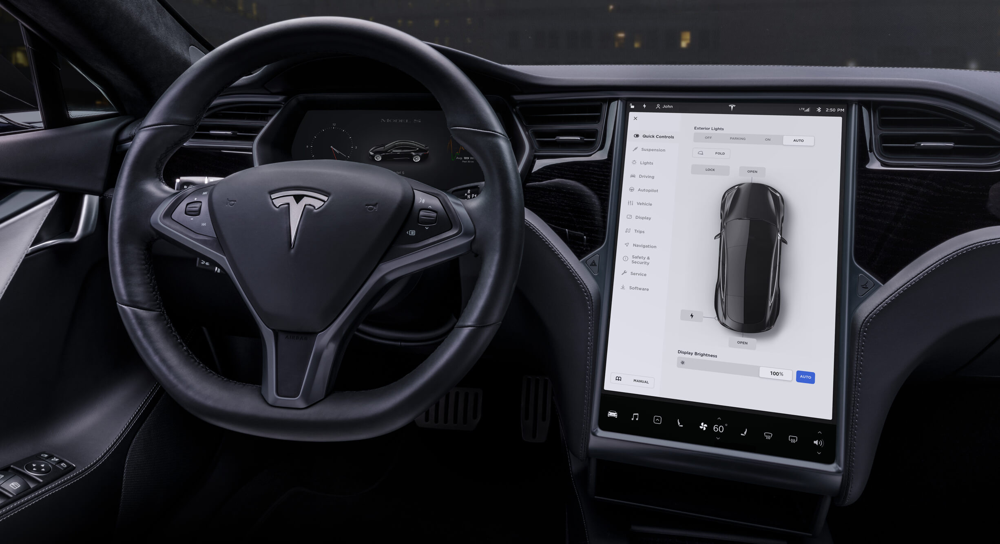
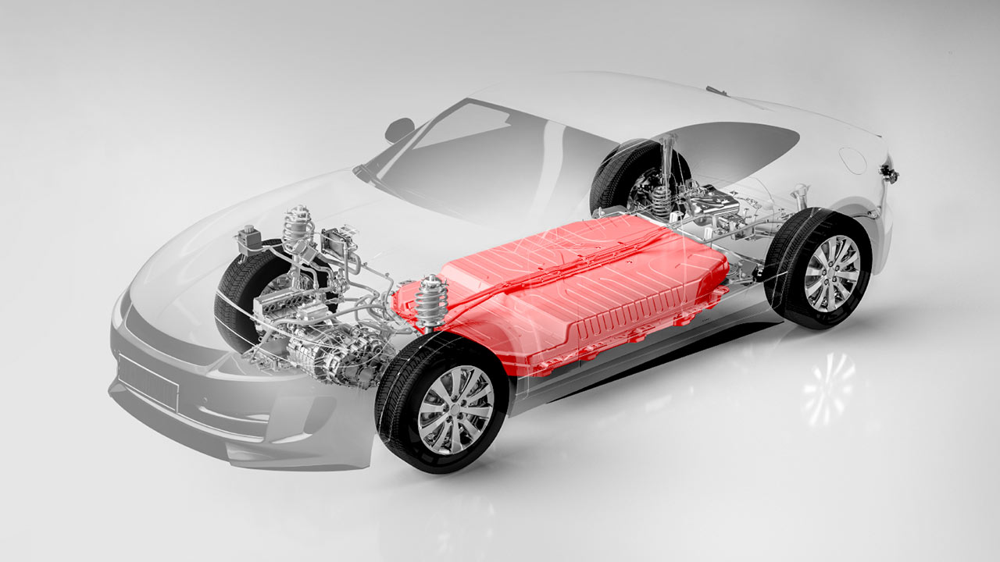

1.Nu poluează aerul
Poluarea este una dintre principalele probleme ale zilelor noastre. Una din principalele surse ale poluării o reprezintă mașinile.
Rezolvarea acestei probleme a fost unul din motivele care a dus la dezvoltarea mașinilor cu motor electric.
Curentul poate fi produs prin metode curate, care să nu distrugă cea mai de preț comoară a omenirii, planeta noastră.
2.Nu poluează fonic
O altă formă a poluării, mult mai vizibilă și enervantă este poluarea fonică. Cu toții ne-am săturat de zgomotul infernal al traficului din orașe.
Poluarea fonică afectează atât omul, cât și fauna din împrejurimi.
Motorul electric este silențios și oferă atât pasagerilor un drum liniștit, cât și celor din jur un mediu silențios.
3.Este de actualitate
În timp ce majoritatea mașinilor se devalorifică destul de repede, cele electrice au prețul neschimbat câțiva ani.
În plus, actualizările de soft se pot face oricând, astfel o mașină electrică poate fi folosită și 20 de ani fără a fi învechită.

4.Petrolul este pe terminate
Petrolul este o sursă neregenerailă, ceea ce înseamnă că se va epuiza la un moment dat.
În cantitățile pe care le folosim astăzi, studiile estimează că ne va ajunge încă 30 de ani.
Dacă poluare nu este în deajuns ca să forțeze trecerea pe curent, epuizarea petrolului este încă un factor care va favoriza schimbarea.
5.Cost redus pentru deplasare
Pe lângă faptul că petrolul este pe terminate, mai este și destul de scump. În SUA un cetățean obisnuit cheltuie $2000 pe an pentru combustibil.
Cu o mașină electrică acesta poate economisi până la $1500. În plus, un EV poate fi încărcat în comfortul propriei locuințe.
6.Economie x2
Pe lângă economia adusă de costul redus al curentului folosit pentru transport, vehiculele electrice mai au și alte beneficii economice.
Deținătorii de EV sunt scutiți de anumite taxe, iar unele parcări au locuri gratuite. În plus, întreținerea are un cost redus, lipsa unui motor
care are nevoie de ulei elimină numeroase piese care trebuie schimbate des. În top 10 piese care trebuie schimbate cel mai des, niciuna nu intră în alcătuirea
unui EV. (filtre de ulei, convertor catalitic, Canistră de carbon activ (EVAP), bobine de aprindere și bujii)

7.Oferă confort
Mașinile cu motor electric au un centru de greuatate mai mic ceea ce oferă stabilitate vehiculului.
Motorul electric oferă o accelerație lină, uneori chiar insesizabilă.
Un drum cu o astfel de mașină este silențios și confortabil, oferind o experiență de neuitat.
Industria mașinilor electrice este în continuă creștere, ceea ce înseamnă că fiecare va putea găsi un model care să se potrivească nevoilor și stilului fiecăruia.